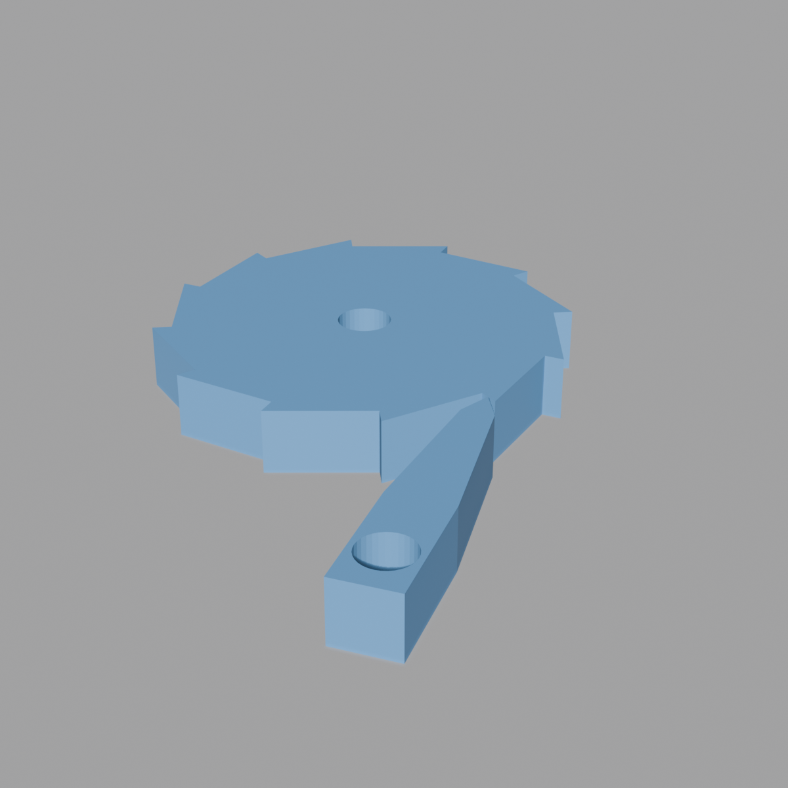

Two primitives: ratchets/ratchet_pawl.py (external wheel + pawl, 3 operators) and ratchets/internal_ratchet.py (internal freewheel ring + hub + pawls, 1 operator). Both build rigid, no-spring mechanisms — you swing or hold the pawl into engagement yourself; there's no living hinge or spring-loaded pawl anywhere in this family. See ../CONVENTIONS.md for the family/primitive pattern.
Primitives in this family
| Primitive | File | Operators |
|---|---|---|
| External ratchet & pawl | ratchets/ratchet_pawl.py | mesh.add_ratchet_wheel, mesh.add_ratchet_pawl, object.add_ratchet_mechanism |
| Internal freewheel ratchet | ratchets/internal_ratchet.py | object.add_internal_ratchet |
The lock direction convention flips between the two files — read this first
External wheel (ratchet_pawl.py): rotating the wheel +Z (CCW, viewed from above) = LOCK; -Z (CW) = FREE.
Internal ring/hub (internal_ratchet.py): rotating the hub CW (viewed from +Z) = LOCK; CCW = FREE — the opposite sense, explicitly justified in the source as matching "the drive-side view of a standard bicycle rear hub."
The underlying sawtooth math is identical between the two (internal_ratchet.py's inner-teeth builder is directly derived from the external wheel's profile builder, "with the outer_radius and root_radius roles swapped so teeth point inward") — the lock direction flips because an internal ring's teeth point inward rather than outward, which reverses the geometric handedness relative to which way the hub turns, even though nothing about the tooth shape itself changed. Don't assume both files share a rotation convention just because they share tooth math — check which file you're in.
Why internal_ratchet.py duplicates code from ratchet_pawl.py
internal_ratchet.py's own comment: "Geometry helpers (finalize_mesh_object, build_pawl_profile_points, create_filled_profile_with_hole) are copied from ratchet_pawl.py so this module has no inter-module dependency." Same self-containment convention as the fastener family — each generator module stands alone rather than importing a sibling generator module. The tradeoff: the two files' shared sawtooth math has to be kept in sync by hand, and internal_ratchet.py's ring-teeth builder cross-references this directly in its own docstring ("Pattern is identical to build_wheel_profile_points in ratchet_pawl.py...").
Note the duplication isn't total: internal_ratchet.py's ring builder uses mathutils.geometry.tessellate_polygon instead of bmesh.ops.triangle_fill, because the ring's inner tooth boundary is non-convex (teeth point inward) — triangle_fill treats each enclosed pocket as a separate region and breaks on a non-convex inner boundary like this one, while tessellate_polygon handles multi-contour polygons (outer CCW + inner-as-hole CW) correctly. If you're duplicating geometry helpers between ratchet files in the future, don't assume create_filled_profile_with_hole's triangle-fill approach is always safe to copy — check whether the boundary you're filling is convex first.
Validation: no clamping, ever — but only in ratchet_pawl.py
ratchet_pawl.py is explicit and consistent about this: every geometric impossibility (tooth_count < 4, a tooth depth that would collapse the wheel through its own center, an axle hole bigger than the wheel, a pivot hole too large for the arm, a pawl tip too wide for the tooth valley) is raised as a ValueError and surfaces as a hard CANCELLED — never silently corrected. This is a stricter policy than most other families in this library, several of which auto-clamp or auto-scale out-of-range inputs instead of blocking (compare bearings or the spring family). internal_ratchet.py mostly follows the same raise/cancel discipline (validate_freewheel() returns a list of error strings that blocks execute() if non-empty) but has one exception — see internal_ratchet.md for the one case there that warns instead of blocking.
FDM compensation vs. running clearance — two different things, don't conflate them
Both files use *_compensation_mm fields the same way as the rest of this library: always added to a hole's nominal diameter, because FDM holes print tight (e.g. axle_hole_compensation_mm, pivot_hole_compensation_mm, bore_compensation_mm).
internal_ratchet.py additionally has clearance_mm (default 0.3mm), which is a different kind of parameter — the radial running gap between the hub's outer surface and the ring's tooth tips, enforced as hub_outer_r <= tip_r - clearance_mm. This is subtracted from the maximum allowed hub radius, not added to a hole — because it's reserving working clearance between two independently-printed moving parts, not compensating a single hole for shrinkage. If you're adding a new ratchet variant with moving parts that need running clearance (as opposed to a press-fit hole), model it the way clearance_mm does here, not as another additive hole compensation field. This is the same distinction the planetary gear family draws with pip_gap — see ../gears/planetary_gear_set.md.
Tooth ramp angle is derived, never a free input
ratchet_pawl.py doesn't let you dial in the back-face ramp angle directly — back_face_angle_deg is computed from tooth count, tooth depth, and the wheel radii (compute_back_face_angle_deg()), then shown as a read-only label in the panel. The module's own design-decision log explains this was a deliberate v1.1 change from an earlier version that treated it as a free input: constraining tooth spacing, a radial drive face, and an independent ramp angle simultaneously is an over-constrained system. "Standard convention for real ratchets — ramp angle is a consequence of tooth proportions, not an independent dial." internal_ratchet.py has no equivalent concept at all — it doesn't compute or report a back-face angle for the internal ring's teeth.
Primitives

Internal Ratchet
A bicycle-freewheel-style mechanism: an outer ring with inward-pointing teeth, an inner hub, and pawl_count pawls mounted on the hub pointing radially outward

Ratchet Pawl
Rigid, no-spring: +Z (CCW from above) wheel rotation = LOCK, -Z (CW) = FREE. See README.md for this family's shared conventions, especially the